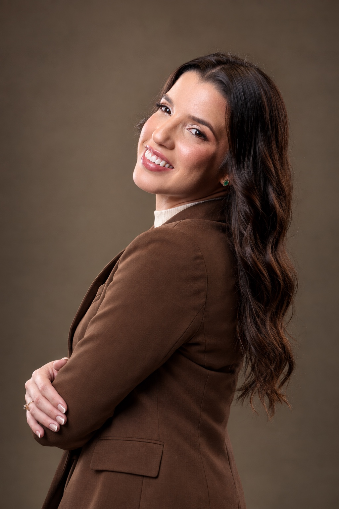

SOBRE MIM
Uma história construída com humildade, esforço e fé.
Sou fruto de uma história de humildade, esforço e fé. Cresci em meio a desafios, onde a batalha sempre fez parte da rotina.
Nesse caminho, aprendi o valor do trabalho, da disciplina e da gratidão, princípios que me guiaram até me tornar médica.
A medicina, para mim, é sobre gente.
É sobre escuta, acolhimento e respeito. É olhar cada paciente de forma única, com suas histórias, medos e esperanças.
Levo a humanidade como parte essencial da minha prática, porque acredito que, por trás de cada diagnóstico, existe uma vida.
FORMAÇÃO
Medicina com preparo e propósito.
01Graduação em Medicina
Universidade Federal da Paraíba — UFPB
02Residência em Clínica Médica
Hospital Universitário Lauro Wanderley — UFPB
03Registro profissional
CRM-PB 20015
ATENDIMENTO
Quer conversar sobre seu cuidado?
Entre em contato pelo WhatsApp para informações e agendamento.